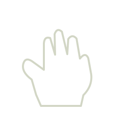
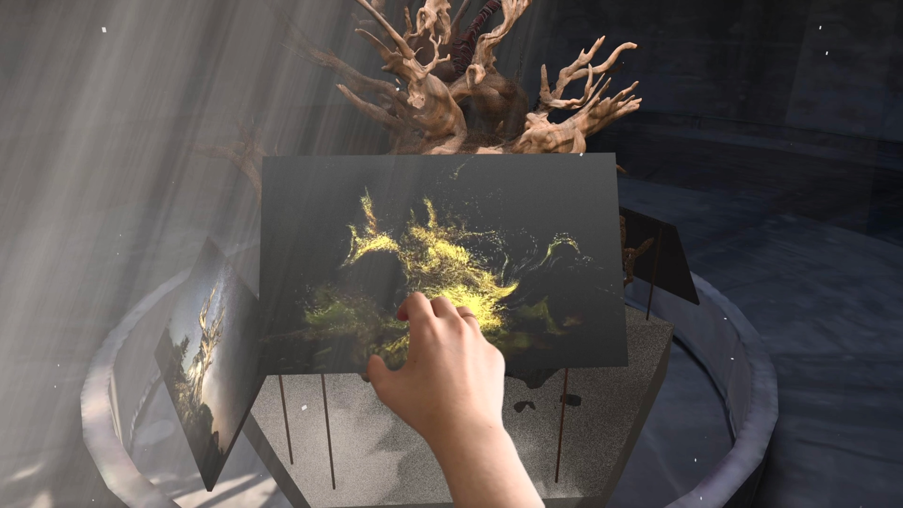
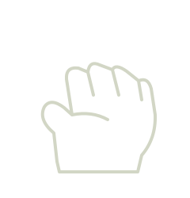
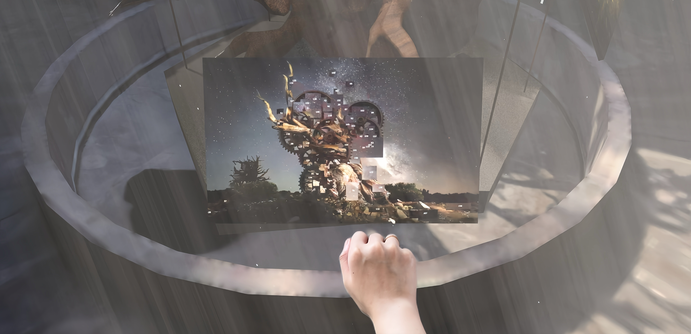
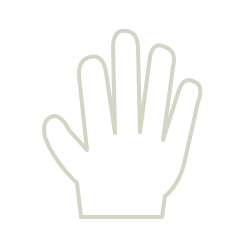
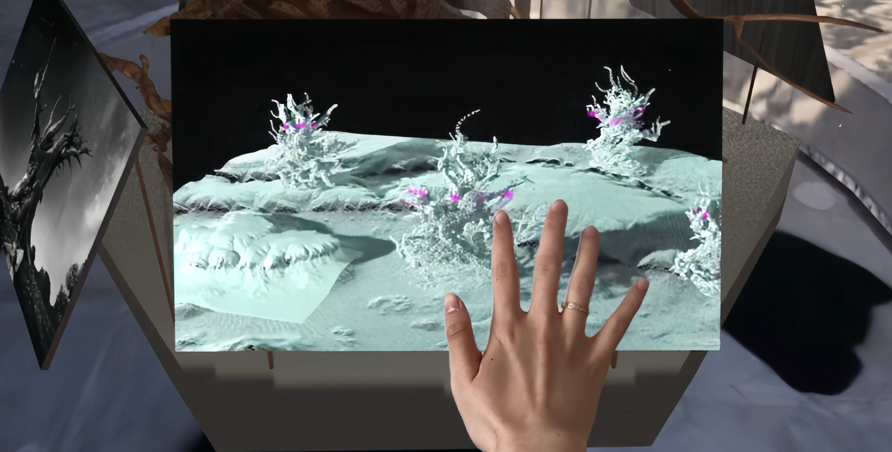
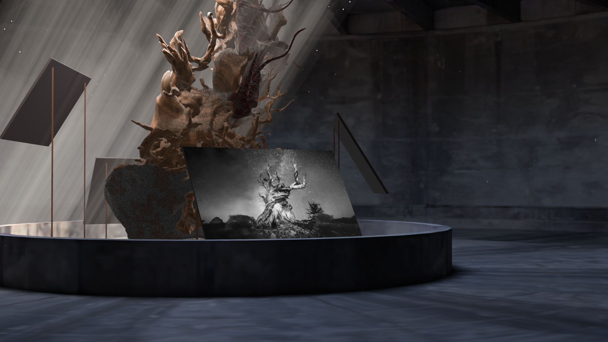
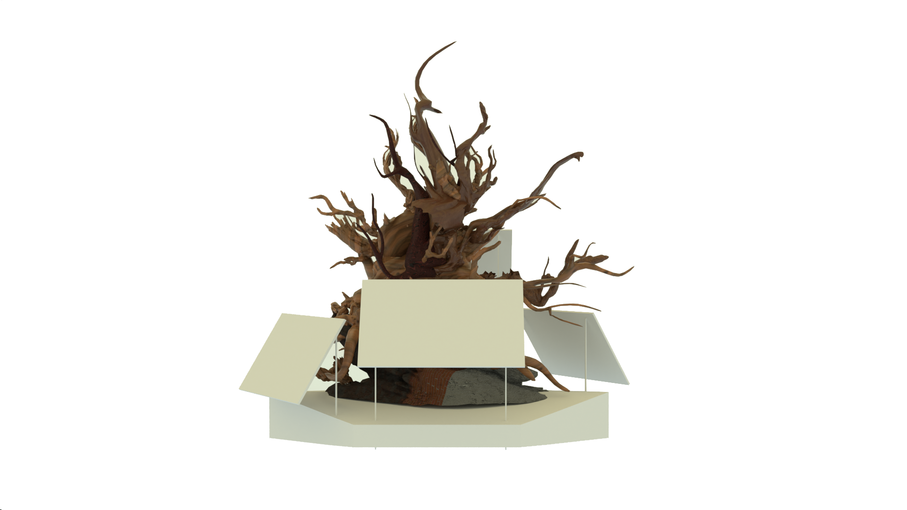

01 / Agricultural society
Half-clenched hand
Hold without fully controlling. The golden tree expresses dependence on nature alongside the impulse to cultivate and domesticate it.

06 / Re-Natured Nature / Individual project / 2025
How do our hands reshape nature?
A gesture-based installation exploring how humans reconstruct nature through cultivation, industrial power and digital information. Three hand postures turn these relationships into an embodied encounter. I built the working interaction in TouchDesigner: camera-based gesture recognition switches the three visual states in real time.
01 / Gesture interactions
The gesture is both an input and a metaphor. Each posture connects a bodily action with a different visual state and historical relationship to nature.

Hold without fully controlling. The golden tree expresses dependence on nature alongside the impulse to cultivate and domesticate it.


Grip with force. The tree becomes a mechanical construction, expressing extraction, suppression and the pursuit of control.


Scan and read. Nature becomes a digital landscape: a surface of data, models and pixels, rather than direct contact with a living entity.

Gesture drawings clarify the three postures. Response images are exported from the original Figma project.
02 / Background & research
The project begins with West Lake in Hangzhou: a landscape shaped over centuries by geography, maintenance, culture and human intervention. Its beauty raises a question—are we encountering untouched nature, or a carefully constructed idea of it?
The research combines observations of West Lake with interview responses. Some people describe its artificial or standardized qualities; others value the integration of landscape, history and personal memory.
A diamond interview exercise first presents an image, then reveals that the diamond is artificial, and finally discusses how its value is framed. The documented responses explore the gap between visual appreciation, authenticity and market value.
These explorations inform the installation’s central question: how do tools, power and desire shape both nature and our perception of it?
03 / Interaction concept
The installation translates this question into three encounters with the same tree. A half-clenched hand holds it in an intermediate state between dependence and control. A clenched fist makes industrial domination visible. An open palm reads nature as information. The circular setting connects the states as a recurring cycle of human intervention.
04 / Project video
The video moves around the installation and demonstrates the half-clenched hand, clenched fist and open palm alongside the agricultural, industrial and digital visual states. Watch the changes in the tree’s form and treatment as the gesture changes.
05 / Installation design


A central tree form anchors the circular installation. Surrounding screens bring the three interpretations into the visitor’s physical space. The design proposes a concealed camera for gesture capture, steel screen supports and a painted gypsum base.
Proposed installation dimensions and materials.
06 / Technical exploration
I implemented the interaction in TouchDesigner, using camera-based gesture recognition to switch between all three visual states in real time. Node-based visual experiments and hand-landmark overlays connect hand input with tree imagery, mechanical transformation and a digital landscape. The installation renders and project video visualize the proposed spatial setting.
Original project documentation ↗